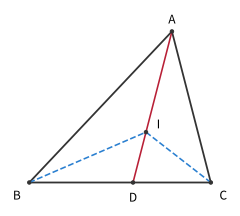
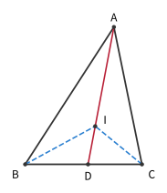
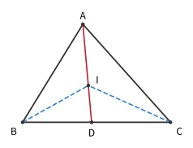

別冊練習問題 7 の解答 内心と角の二等分線の比
(1) \(\triangle ABC\) で \(BC=7,\ CA=6,\ AB=8\) とする。\(\angle A\) の二等分線と \(BC\) の交点を \(D\)、内心を \(I\) とするとき、\(AI:ID\) を求めよ。
\(D\) は \(BC\) を \(c:b\) に内分
\(AD\) は \(\angle A\) の二等分線。
\[BD:DC=AB:AC=8:6,\qquad BD=\dfrac{8}{14}\cdot7=4\]
\(BI\) は \(\angle B\) の二等分線
\(\triangle ABD\) で \(BI\) は \(\angle B\) の二等分線。
\[AI:ID=BA:BD=8:4=14:7\]答え
\[AI:ID=14:7\]【答案】
\[AI:ID=14:7\]答
(2) \(\triangle ABC\) で \(BC=5,\ CA=6,\ AB=7\) とする。\(\angle A\) の二等分線と \(BC\) の交点を \(D\)、内心を \(I\) とするとき、\(AI:ID\) を求めよ。
\(D\) は \(BC\) を \(c:b\) に内分
\(AD\) は \(\angle A\) の二等分線。
\[BD:DC=AB:AC=7:6,\qquad BD=\dfrac{7}{13}\cdot5=\dfrac{35}{13}\]
\(BI\) は \(\angle B\) の二等分線
\(\triangle ABD\) で \(BI\) は \(\angle B\) の二等分線。
\[AI:ID=BA:BD=7:\dfrac{35}{13}=13:5\]答え
\[AI:ID=13:5\]【答案】
\[AI:ID=13:5\]答
(3) \(\triangle ABC\) で \(BC=9,\ CA=8,\ AB=7\) とする。\(\angle A\) の二等分線と \(BC\) の交点を \(D\)、内心を \(I\) とするとき、\(AI:ID\) を求めよ。
\(D\) は \(BC\) を \(c:b\) に内分
\(AD\) は \(\angle A\) の二等分線。
\[BD:DC=AB:AC=7:8,\qquad BD=\dfrac{7}{15}\cdot9=\dfrac{21}{5}\]
\(BI\) は \(\angle B\) の二等分線
\(\triangle ABD\) で \(BI\) は \(\angle B\) の二等分線。
\[AI:ID=BA:BD=7:\dfrac{21}{5}=15:9\]答え
\[AI:ID=15:9\]【答案】
\[AI:ID=15:9\]答